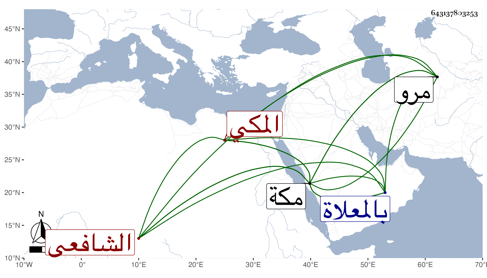

0902Sakhawi.DawLamic.ITO20230111-ara1.EIS1600.643137803253
Biography ID: 643137803253
أحمد بن جار الله بن زائد بن يحيى بن محيي بن سالم بن معقب بن محمد بن موسى بن محمد بن موسى الشهاب السنيسي المكي الشافعي أخو علي الآتي ويعرف بابن زائد . ولد في سنة ست وأربعين وسبعمائة أو بعدها بقليل وسمع من الجمال ابن عبد المعطي الشفا بفوت من أوله وأجاز له العز بن جماعة والعماد بن كثير وابن سند وابن رافع وابن أميلة والصلاح بن أبي عمر وابن الهبل والحراوي والأسنائي وأبو البقاء السبكي وآخرون وتفقه في ابتداء أمره قليلا بالشيخ أحمد ابن ناصر الواسطي وحضر مجالس اليافعي في الحديث وغيره وكذا حضر دروس الشهاب بن ظهيرة فصارت له بعض مشاركات في الفقه وفي مسائل فرضية وحسابية ولازم الشريف حسن بن عجلان صاحب مكة ونظر له في أمواله بوادي مرو غيرها فأنتفع بذلك وكثرة مراعاة الناس له فأثرى واتسعت أمواله واستفاد بمكة دورا ونخيلا وسقايا كثيرة بالوادي المذكور وغيره ورزق عدة أولاد . ومات في ليلة الأحد سادس عشر ربيع الأول سنة سبع وعشرين بمكة ودفن من الغد بالمعلاة . ذكره الفاسي باختصار في تاريخ مكة .
